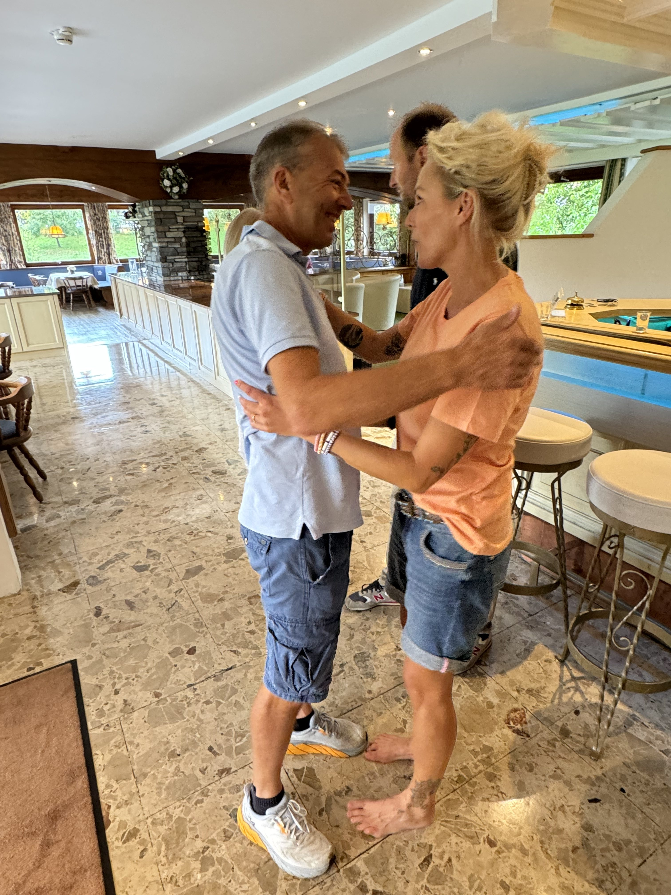
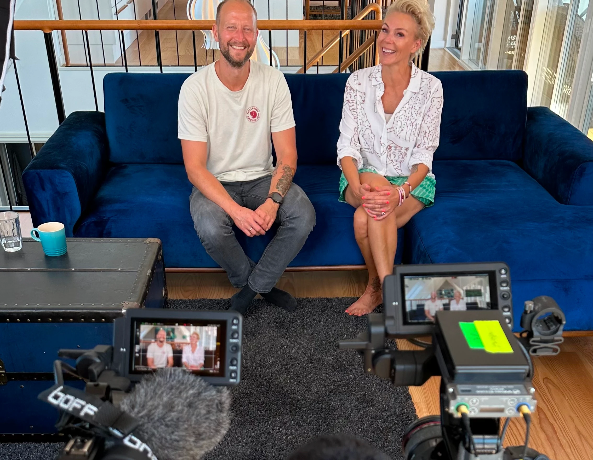
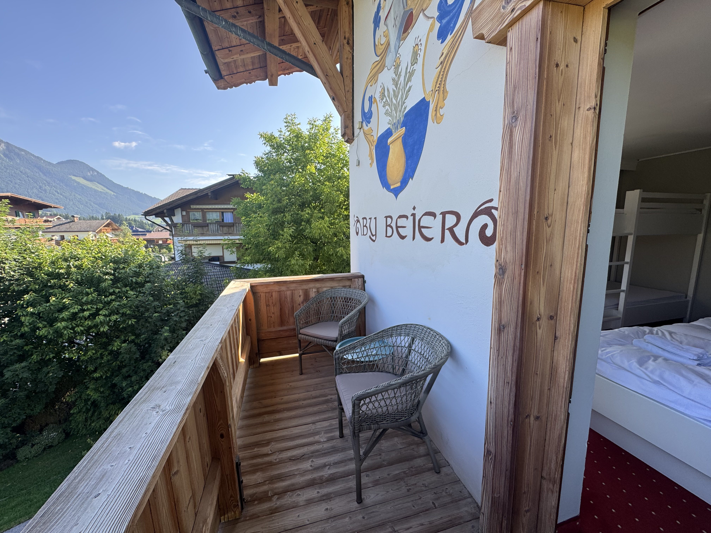

Mød ejerne
“Her behandler vi vores gæster som venner”
Vi, Lene og Anders, overtog hotellet i september 2024 og har lagt alt vores hjerteblod i at skabe et hyggeligt familie hotel i Itter. Hotel Edelweiss er vores 20 år gamle drøm, gjort til virkelighed.
Hotellet er ikke bare vores arbejde, men vores hjem. Vi driver Edelweiss med hjertet forrest, med fokus på nærvær, varme og gæstfrihed.
Vi vil gøre alt, hvad vi kan, for at give jer en ferie fyldt med hygge, nærvær og gode stunder, når I bor hos os. Vi håber også, at I vil være med til at skabe minder sammen med os – med smil på læben og plads til de små, uforudsete oplevelser, der gør ferien helt særlig.
Vi ønsker, at du kommer til at føle dig lige så meget hjemme på Edelweiss, som vi gør.

Forfatter: Lene
Dato: 24/1-24
Rejsen til Itter
Hotellet har i 20 år været hjem for Peter og Alison – et britisk par, der flyttede til Itter med deres to drenge. En dag fik de vores flyer i hånden, og kort tid efter tikkede en mail ind i vores indbakke. De overvejede deres næste kapitel og inviterede os forbi. Det blev kærlighed ved første blik – både til stedet og til drømmen om at føre hotellets historie videre.

Forfatter: Lene
Dato: 24/1-24
Kommende TV-optagelser
Vi vil gerne informere jer om, at der over en længere periode vil blive lavet tv-optagelser på hotellet til TV2. Optagelserne vil foregå sporadisk, både indendørs og udendørs men følger primært vores nye dagligdag. Læs om nøjagtige datoer og planer for optagelserne i dette blogindlæg.

Forfatter: Lene
Dato: 24/1-24
Hvem og hvad er Hotel Edelweiss nu?
Er du nysgerrig på vores hotel og vores nye tilværelse i Alperne? Så har Kitzbüheler Alpen Management GmbH været forbi og lavet et interview, hvor der også er blevet taget nogle flotte billeder af hotellet. Du får samtidig lidt baggrundshistorie og et indblik i, hvordan vi overtog hotellet, samt den vision vi har for fremtiden.